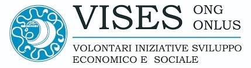

Nell'anno scolastico 2022/23, la classe
ha preso parte al progetto Giovani & Impresa,
in associazione con V.I.S.E.S Onlus.

una Onlus che dopo essere diventata ente di Federmanager
raccoglie le esperienze di manager volontari
per trasformare le potenzialità dei giovani in opportunità di sviluppo personale
e professionale.